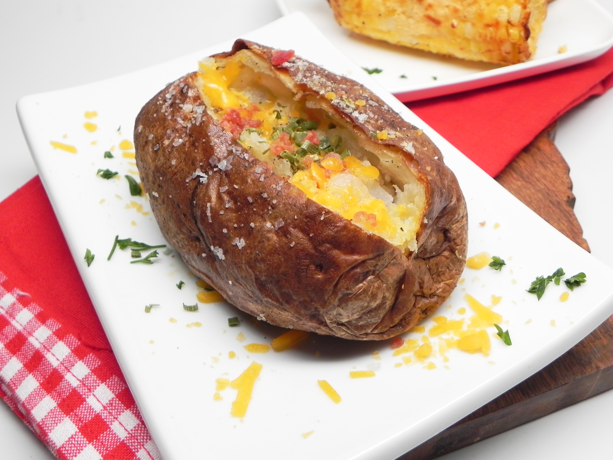

Easy Air Fryer Baked Potatoes

This air fryer baked potato recipe makes tender, delicious baked potatoes with crispy, flavorful skin.
Finish them with a dollop of sour cream, if you'd like.
Ingredients
- 4 large baking potatoes, scrubbed
- 2 tablespoons olive oil
- kosher salt and freshly ground black pepper to taste
- ½ teaspoon garlic powder, or to taste
- ½ teaspoon dried parsley, or to taste
- 4 tablespoons butter
Steps
-
Preheat an air fryer to 400 degrees F (200 degrees C).
-
Rub potatoes with olive oil and season with salt, pepper, garlic powder, and parsley. Place potatoes in the air fryer basket.
-
Cook in the preheated air fryer until potatoes are soft, 40 to 50 minutes, depending on potato size.
-
Slice potatoes lengthwise. Pinch both sides of each potato, using your hands and forcing potatoes to open, until the fluffy insides start to come out. Add 1 tablespoon of butter into each potato.
Back to all Recipe